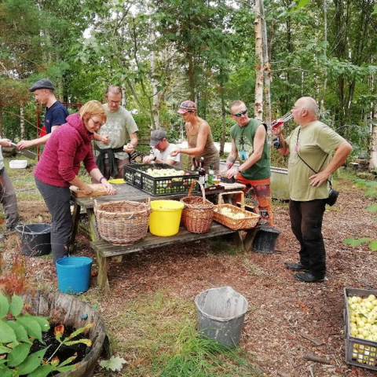

|

|
| Veganism is the practice of refraining from the use of animal products, particularly in diet, and following the corresponding reasoning that commodifies animals. A believer of such a philosophy is known as Vegan. Often misunderstood as a person who either has eating disorders, or an extraordinary passion for animal rights, a vegan is subjected to numerous stereotypes, primarily due to lack of awareness amongst those who do it. Let’s be real, it is truly a challenging yet rewarding form of life style. It is a way of life that precludes all forms of exploitation of and severity to animals, for not just food, but also clothing amongst other things. It correspondingly encourages development and utilization of animal-free alternatives for benefit of the environment. A plant-based diet can be almost equally nourishing too, only if made perfectly use of. A vegan lifestyle isn’t just about what you eat, it’s much more than that. It’s about the clothes you buy, the cosmetics you use, the scientific experimentations you perform, and the joyrides you enjoy when on a vacay to Amber Fort and so much more. | ||
|---|---|---|
| Veganism can be deliberated as an extreme version of vegetarianism and though the term was coined by Donald Watson in 1944, it traces its roots back to ancient Indian and Mediterranean societies. He stated that while there were people who did not eat meat, there were people who did not consume milk or eggs too. Like most other trends, veganism trickled down from the more elite societies. If this is the year of vanilla veganism, as every trend forecaster and market analyst seems to agree, then there is not one single basis, but an impeccable plant-based storm of factors. People cite one or more of three key drives for going vegan – animal welfare, environmental concerns and personal health – and it is being complemented by an infinite array of new business startups, cookbooks, YouTube channels, trendy events and polemical documentaries. | ||
| American animal rights foundation, People for Ethical Treatment of Animals or PETA has made noteworthy efforts in ensuring that no animals are maltreated for any possessions. The ‘PETA-approved Vegan logo’ authorizes companies that sell vegan merchandise to highlight their cruelty-free offerings. It assists customers to have easy access to animal-free products at a glimpse and buy goods that coordinate with their ideologies. The logo can be found on websites, social media platforms and store signs as a signal that no animals were harmed or killed in the manufacturing of the products being sold. Another alternative is the Coalition for Consumer Information on Cosmetics (CCIC) leaping bunny logo that ensures that the merchandise contains no animal products or by-products and was not tested on animals, thus making it suitable for consumption by vegans. | ||
| Lowering your intake of animal products may likewise reduce your risk of Alzheimer’s disease or dying from cancer or heart disease. Some also choose veganism to avoid the side effects linked to the antibiotics and hormones used in modern animal agriculture. Finally, studies consistently link vegan diets to a lower body weight and body mass index. Some people may choose these diets to lose weight |
|
A vegan lifestyle isn’t just about what you eat, it’s much more than that. It’s about the clothes you buy, the cosmetics you use, the scientific experimentations you perform, and the joyrides you enjoy when on a vacay to Amber Fort and so much more. A plant-based diet can be almost equally nourishing too, only if made perfectly use of. |
Location of Vegan restaurant in Delhi